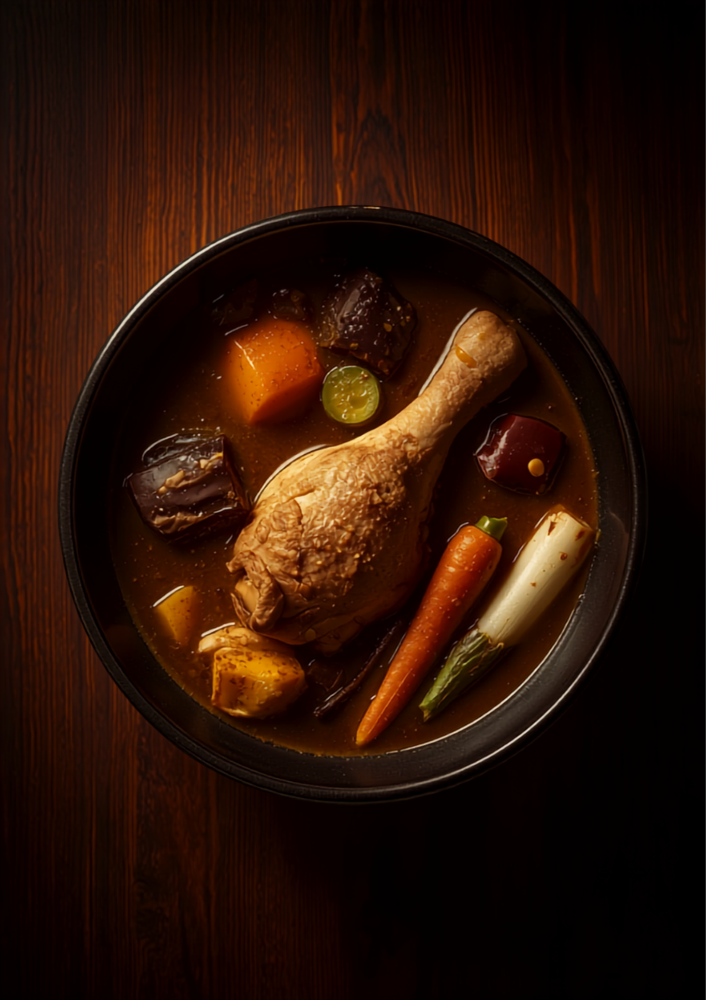

<meta charset="UTF-8" />
<meta name="viewport" content="width=device-width, initial-scale=1.0" />
<title>CURRY KATZ｜夜にだけ開く、スープカレー。｜福岡・藤崎の夜のスープカレー専門店</title>
<meta name="description" content="福岡・藤崎駅4番出口すぐ、夕方からだけ開く大人時間のスープカレー専門店『CURRY KATZ』。スープカレーとココナッツカレーの2つのベースから選ぶスタイル。ホロホロの鶏もも、糸島豚、ゴロゴロの糸島野菜。木の温もりに包まれたカウンター5席の夜の隠れ家。現金のみ。" />
<meta property="og:type" content="website" />
<meta property="og:title" content="CURRY KATZ｜夜にだけ開く、スープカレー。" />
<meta property="og:description" content="藤崎の夜の隠れ家スープカレー。スープ／ココナッツの2ベース、ホロホロ鶏もも、ゴロゴロ糸島野菜。カウンター5席。" />
<meta property="og:image" content="https://jinshanxia74-star.github.io/sample-sites/curry-katz-hero.png" />
<link rel="canonical" href="https://jinshanxia74-star.github.io/sample-sites/curry-katz.html">
<meta property="og:url" content="https://jinshanxia74-star.github.io/sample-sites/curry-katz.html">
<meta property="og:locale" content="ja_JP">
<meta name="twitter:card" content="summary_large_image">
<meta name="theme-color" content="#201812" />

<script type="application/ld+json">
{
  "@context": "https://schema.org",
  "@type": "Restaurant",
  "name": "CURRY KATZ",
  "servesCuisine": [
    "スープカレー",
    "カレー"
  ],
  "image": "https://jinshanxia74-star.github.io/sample-sites/curry-katz-hero.png",
  "priceRange": "￥1,250〜￥1,900",
  "paymentAccepted": "現金",
  "address": {
    "@type": "PostalAddress",
    "addressRegion": "福岡県",
    "addressLocality": "福岡市早良区",
    "streetAddress": "藤崎（藤崎駅4番出口すぐ）",
    "addressCountry": "JP"
  },
  "openingHours": "Mo-Su 18:00-",
  "url": "https://jinshanxia74-star.github.io/sample-sites/curry-katz.html"
}
</script>

<style>
  @import url('https://fonts.googleapis.com/css2?family=Train+One&family=Noto+Sans+JP:wght@400;500;700&family=DM+Mono:wght@400;500&display=swap');

  :root {
    --bg: #201812;
    --surface: #2C2119;
    --surface-2: #362A20;
    --primary: #E87A1E;
    --accent: #F2D8A7;
    --text: #F6EFE5;
    --muted: #A08F7B;
    --line: #4A3A2C;
    --disp: 'Train One', sans-serif;
    --sans: 'Noto Sans JP', sans-serif;
    --mono: 'DM Mono', monospace;
  }

  * { margin: 0; padding: 0; box-sizing: border-box; }
  html, body { overflow-x: hidden; }
  html { scroll-behavior: smooth; }

  body {
    font-family: var(--sans);
    background: var(--bg);
    color: var(--text);
    line-height: 1.9;
    font-size: 16px;
    -webkit-font-smoothing: antialiased;
  }
  body::before {
    content: ""; position: fixed; inset: 0; z-index: -2;
    background:
      radial-gradient(circle at 50% 0%, rgba(232,122,30,0.14), transparent 45%),
      radial-gradient(circle at 15% 90%, rgba(242,216,167,0.05), transparent 40%),
      var(--bg);
  }
  .mono { font-family: var(--mono); }
  .wrap { max-width: 1080px; margin: 0 auto; padding: 0 clamp(1.3rem, 5vw, 3rem); }
  .eyebrow { font-family: var(--mono); font-size: 0.74rem; letter-spacing: 0.24em; text-transform: uppercase; color: var(--primary); display: inline-block; margin-bottom: 0.8rem; }

  /* ============ ヒーロー：LPジャケット ============ */
  .hero { padding: clamp(2.5rem, 7vw, 5rem) 0; }
  .hero-inner { display: grid; grid-template-columns: 1fr 0.9fr; gap: clamp(2rem, 5vw, 4rem); align-items: center; }
  .jacket-wrap { position: relative; }
  .vinyl {
    position: absolute;
    top: 50%; right: -8%;
    transform: translateY(-50%);
    width: 70%; aspect-ratio: 1; border-radius: 50%;
    background:
      repeating-radial-gradient(circle at 50% 50%, #0E0A07 0 2px, #17110C 2px 6px);
    z-index: 0;
    box-shadow: 0 30px 60px -30px rgba(0,0,0,0.9);
  }
  .vinyl::after { content: ""; position: absolute; inset: 40%; border-radius: 50%; background: var(--primary); box-shadow: 0 0 0 6px #0E0A07; }
  .jacket {
    position: relative; z-index: 1;
    aspect-ratio: 1;
    background: var(--surface);
    border: 1px solid var(--line);
    box-shadow: 0 40px 80px -36px rgba(0,0,0,0.9);
    overflow: hidden;
    display: flex; flex-direction: column;
  }
  .jacket .cover-img { position: relative; flex: 1; overflow: hidden; }
  .jacket .cover-img img { width: 100%; height: 100%; object-fit: cover; }
  .jacket .cover-img::after { content: ""; position: absolute; inset: 0; background: linear-gradient(180deg, rgba(32,24,18,0.15), rgba(32,24,18,0.75)); }
  .jacket .cover-cap {
    position: absolute; left: 0; right: 0; bottom: 0; padding: clamp(1rem, 3vw, 1.6rem);
  }
  .jacket .cover-cap .side { font-family: var(--mono); font-size: 0.72rem; letter-spacing: 0.2em; color: var(--accent); }
  .jacket .cover-cap h1 { font-family: var(--disp); font-size: clamp(2rem, 6vw, 3.2rem); line-height: 0.95; color: var(--text); margin-top: 0.3rem; }
  .jacket .cover-cap h1 .o { color: var(--primary); }

  .hero-copy .lp-tag { font-family: var(--mono); font-size: 0.78rem; letter-spacing: 0.16em; color: var(--accent); }
  .hero-copy h2 {
    font-family: var(--disp);
    font-size: clamp(2rem, 6vw, 3.4rem);
    line-height: 1.15;
    margin: 1rem 0;
    color: var(--text);
  }
  .hero-copy h2 .o { color: var(--primary); }
  .hero-copy p { color: #E0D2C2; max-width: 34ch; }
  .hero-meta { display: flex; flex-wrap: wrap; gap: 0.6rem; margin-top: 1.6rem; }
  .tagpill { font-family: var(--mono); font-size: 0.76rem; letter-spacing: 0.06em; border: 1px solid var(--line); border-radius: 999px; padding: 0.4rem 0.9rem; color: var(--accent); }

  /* ============ ライナーノーツ ============ */
  section.block { padding: clamp(2.8rem, 7vw, 5rem) 0; }
  h3.title { font-family: var(--disp); font-size: clamp(1.7rem, 4.6vw, 2.6rem); line-height: 1.2; margin-bottom: 1rem; }
  h3.title .o { color: var(--primary); }
  p.body { color: #E0D2C2; max-width: 62ch; }
  p.body + p.body { margin-top: 1rem; }
  .liner { border-left: 3px solid var(--primary); padding-left: clamp(1.2rem, 3vw, 2rem); }

  /* ============ セットリスト ============ */
  .setlist-head { text-align: center; margin-bottom: 2rem; }
  .sides { display: grid; grid-template-columns: 1fr 1fr; gap: 1.4rem; }
  .side-card { background: var(--surface); border: 1px solid var(--line); border-radius: 8px; padding: clamp(1.4rem, 3.5vw, 2rem); }
  .side-card .side-h { display: flex; align-items: baseline; justify-content: space-between; border-bottom: 1px solid var(--line); padding-bottom: 0.8rem; margin-bottom: 1rem; gap: 1rem; }
  .side-card .side-h .lbl { font-family: var(--disp); font-size: 1.6rem; color: var(--primary); }
  .side-card .side-h .en { font-family: var(--mono); font-size: 0.74rem; letter-spacing: 0.14em; color: var(--muted); }
  .track { display: grid; grid-template-columns: 30px 1fr auto; gap: 0.8rem; align-items: baseline; padding: 0.6rem 0; border-bottom: 1px dashed var(--line); }
  .track:last-child { border-bottom: 0; }
  .track .no { font-family: var(--mono); color: var(--muted); font-size: 0.85rem; }
  .track .nm { color: var(--text); }
  .track .nm small { display: block; color: var(--muted); font-size: 0.8rem; }
  .track .pr { font-family: var(--mono); color: var(--accent); font-size: 0.9rem; white-space: nowrap; }
  .side-note { margin-top: 1rem; font-size: 0.84rem; color: var(--muted); }

  /* ============ ゴロゴロ具材 特集 ============ */
  .feature { display: grid; grid-template-columns: 1.05fr 0.95fr; gap: clamp(1.6rem, 4vw, 3rem); align-items: center; }
  .feature figure { border-radius: 10px; overflow: hidden; border: 1px solid var(--line); box-shadow: 0 30px 60px -34px rgba(0,0,0,0.9); }
  .feature figure img { display: block; width: 100%; aspect-ratio: 4/5; object-fit: cover; }
  .feature .fq { font-family: var(--disp); font-size: clamp(1.3rem, 3.6vw, 1.8rem); color: var(--primary); line-height: 1.3; margin: 0.4rem 0 1rem; }
  .veg-tags { display: flex; flex-wrap: wrap; gap: 0.55rem; margin-top: 1.2rem; }
  .veg { font-family: var(--mono); font-size: 0.8rem; background: var(--surface-2); border: 1px solid var(--line); border-radius: 6px; padding: 0.4rem 0.8rem; color: var(--accent); }

  /* ============ 注文方法（How to play） ============ */
  .howto { background: var(--surface); border-radius: 12px; padding: clamp(1.8rem, 5vw, 3rem); }
  .steps { display: grid; grid-template-columns: repeat(auto-fit, minmax(170px, 1fr)); gap: 1.2rem; margin-top: 1.6rem; }
  .step .n { font-family: var(--disp); font-size: 1.8rem; color: var(--primary); line-height: 1; }
  .step h4 { font-family: var(--sans); font-weight: 700; margin: 0.5rem 0 0.3rem; }
  .step p { font-size: 0.88rem; color: var(--muted); }
  .extras { display: flex; flex-wrap: wrap; gap: 0.55rem; margin-top: 1.6rem; }
  .extra { font-family: var(--mono); font-size: 0.8rem; border: 1px solid var(--primary); color: var(--primary); border-radius: 999px; padding: 0.35rem 0.85rem; }

  /* ============ 声 ============ */
  .voices { display: grid; grid-template-columns: repeat(auto-fit, minmax(250px, 1fr)); gap: 1.2rem; margin-top: 1.5rem; }
  .voice { background: var(--surface); border: 1px solid var(--line); border-radius: 10px; padding: 1.4rem 1.5rem; }
  .voice .stars { font-family: var(--mono); color: var(--primary); letter-spacing: 0.12em; margin-bottom: 0.4rem; }
  .voice p { color: #E0D2C2; font-size: 0.93rem; }
  .voice .from { display: block; margin-top: 0.7rem; font-family: var(--mono); font-size: 0.76rem; color: var(--muted); letter-spacing: 0.06em; }

  /* ============ アクセス ============ */
  .access { border-top: 1px solid var(--line); }
  .access-inner { display: grid; grid-template-columns: 1.1fr 1fr; gap: clamp(1.6rem, 4vw, 3rem); padding: clamp(2.6rem, 6vw, 4rem) 0; }
  .access h3 { font-family: var(--disp); font-size: clamp(1.6rem, 4.5vw, 2.4rem); margin-bottom: 0.8rem; }
  .access h3 .o { color: var(--primary); }
  .access p { color: #E0D2C2; max-width: 40ch; }
  .access dl { display: grid; grid-template-columns: auto 1fr; gap: 0.55rem 1.2rem; margin-top: 0.4rem; }
  .access dt { font-family: var(--mono); color: var(--muted); letter-spacing: 0.06em; }
  .access dd { color: var(--text); }
  .cash { display: inline-block; font-family: var(--mono); font-size: 0.8rem; border: 1px solid var(--accent); color: var(--accent); padding: 0.3rem 0.8rem; border-radius: 6px; margin-top: 1rem; }
  .signature { text-align: center; font-family: var(--disp); color: var(--muted); font-size: 1.1rem; letter-spacing: 0.1em; padding: 1.8rem; }

  .fade { opacity: 0; transform: translateY(18px); transition: opacity 0.75s ease, transform 0.75s ease; }
  .fade.in { opacity: 1; transform: none; }

  @media (max-width: 860px) {
    .hero-inner, .sides, .feature, .access-inner { grid-template-columns: 1fr; }
    .jacket-wrap { max-width: 420px; margin: 0 auto; }
    .vinyl { right: -6%; width: 55%; }
    .feature figure { max-width: 420px; }
  }
  @media (prefers-reduced-motion: reduce) {
    html { scroll-behavior: auto; }
    .fade { opacity: 1; transform: none; transition: none; }
  }
</style>

<!-- ============ ヒーロー：LPジャケット ============ -->
<header class="hero">
  <div class="wrap hero-inner">
    <div class="jacket-wrap">
      <div class="vinyl" aria-hidden="true"></div>
      <div class="jacket">
        <div class="cover-img">
          
          <div class="cover-cap">
            <span class="side">LP ・ SOUP CURRY ・ FUJISAKI</span>
            <h1>CURRY <span class="o">KATZ</span></h1>
          </div>
        </div>
      </div>
    </div>
    <div class="hero-copy">
      <span class="lp-tag">NOW PLAYING ・ 18:00 —</span>
      <h2>夜にだけ開く、<br /><span class="o">スープカレー。</span></h2>
      <p>藤崎駅4番出口すぐ。木の温もりに包まれた、カウンター5席の隠れ家。夕方からだけ灯る、大人時間のスープカレー専門店です。</p>
      <div class="hero-meta">
        <span class="tagpill">夕方18時〜</span>
        <span class="tagpill">カウンター5席</span>
        <span class="tagpill">注文シート式</span>
        <span class="tagpill">現金のみ</span>
      </div>
    </div>
  </div>
</header>

<!-- ============ ライナーノーツ ============ -->
<section class="block">
  <div class="wrap">
    <div class="liner fade">
      <span class="eyebrow">Liner Notes</span>
      <h3 class="title">札幌のあの味を、<span class="o">福岡の夜に。</span></h3>
      <p class="body">スープカレーの本場・札幌で食べた、あの一杯が忘れられない。そんな想いから生まれたお店です。刺激的なだけじゃない、丁寧な仕事が伝わる、体にやさしく染み渡る味わい。</p>
      <p class="body">入口から店内まで、木の温もり。カーテンで仕切られた席で、周りを気にせず、料理にゆっくり集中できる。昭和の家庭のような安心感と、大人の隠れ家のような特別感が同居する、夜だけの場所です。</p>
    </div>
  </div>
</section>

<!-- ============ セットリスト ============ -->
<section class="block">
  <div class="wrap">
    <div class="setlist-head fade">
      <span class="eyebrow">Tonight's Set List</span>
      <h3 class="title">2つのベースから、<span class="o">今夜の一杯を。</span></h3>
      <p class="body" style="margin:0 auto;">まずはベースを選び、鶏もも・糸島豚などの主材料を決める。あとはトッピングとセットで、あなただけの一杯に。</p>
    </div>
    <div class="sides fade">
      <div class="side-card">
        <div class="side-h"><span class="lbl">SIDE A</span><span class="en">SOUP CURRY BASE</span></div>
        <div class="track"><span class="no">A1</span><span class="nm">お野菜のスープカレー<small>ゴロゴロの糸島野菜がたっぷり</small></span><span class="pr">¥1,250</span></div>
        <div class="track"><span class="no">A2</span><span class="nm">鶏もも1本<small>骨からホロッと崩れる、店オススメ</small></span><span class="pr">+ ¥500</span></div>
        <div class="track"><span class="no">A3</span><span class="nm">糸島豚<small>京都の出張客も唸る旨さ</small></span><span class="pr">+ ¥500</span></div>
        <p class="side-note">※ スパイスの効いた風味がガツンと。スープ自体はサラッと、ペロッといけます。</p>
      </div>
      <div class="side-card">
        <div class="side-h"><span class="lbl">SIDE B</span><span class="en">COCONUT CURRY BASE</span></div>
        <div class="track"><span class="no">B1</span><span class="nm">ココナッツカレー<small>まろやかで香り高いもう一つの主役</small></span><span class="pr">¥1,250〜</span></div>
        <div class="track"><span class="no">B2</span><span class="nm">追いカリー<small>2種類を一度に楽しむ、贅沢な味変</small></span><span class="pr">+ 追加</span></div>
        <div class="track"><span class="no">B3</span><span class="nm">サラダ&ドリンクセット<small>ドリンクは+150円でグラスビールに</small></span><span class="pr">セット</span></div>
        <p class="side-note">※ お腹が空いている時は「追いカリー」で2種を。味変にレモンをご飯へ絞っても。</p>
      </div>
    </div>
  </div>
</section>

<!-- ============ ゴロゴロ具材 特集 ============ -->
<section class="block">
  <div class="wrap feature fade">
    <figure>
      
    </figure>
    <div>
      <span class="eyebrow">The Bowl</span>
      <p class="fq">箸を下ろしただけで、<br />骨と身がホロっと崩れる。</p>
      <p class="body">到着して驚くのが、具材のゴロゴロ感。定番の糸島野菜がたっぷり入って、メインの鶏ももはとにかくホロホロ。その身をスープに浸して、ご飯と一緒に食べれば——優勝です。</p>
      <div class="veg-tags">
        <span class="veg">かぼちゃ</span>
        <span class="veg">ナス</span>
        <span class="veg">にんじん</span>
        <span class="veg">オクラ</span>
        <span class="veg">大根</span>
        <span class="veg">ゴーヤ</span>
      </div>
    </div>
  </div>
</section>

<!-- ============ 注文方法 ============ -->
<section class="block">
  <div class="wrap">
    <div class="howto fade">
      <span class="eyebrow">How to Order</span>
      <h3 class="title">注文は、<span class="o">シートに書くだけ。</span></h3>
      <div class="steps">
        <div class="step"><span class="n">01</span><h4>ベースを選ぶ</h4><p>スープカレー or ココナッツカレー。</p></div>
        <div class="step"><span class="n">02</span><h4>主材料を決める</h4><p>鶏もも、糸島豚など。ご飯の量も選べます。</p></div>
        <div class="step"><span class="n">03</span><h4>セット・トッピング</h4><p>サラダ&ドリンク、各種トッピングを追加。</p></div>
        <div class="step"><span class="n">04</span><h4>シートを提出</h4><p>あとは、届くのをゆっくり待つだけ。</p></div>
      </div>
      <div class="extras">
        <span class="extra">+ ソーセージ</span>
        <span class="extra">+ ゆで卵</span>
        <span class="extra">+ ハバネロソース</span>
        <span class="extra">+ 追いカリー</span>
        <span class="extra">味変レモン</span>
      </div>
    </div>
  </div>
</section>

<!-- ============ 声 ============ -->
<section class="block">
  <div class="wrap fade">
    <span class="eyebrow">Reviews</span>
    <h3 class="title">聴いた人の、<span class="o">レビュー。</span></h3>
    <div class="voices">
      <div class="voice">
        <div class="stars">★★★★★</div>
        <p>18時前に到着しましたが、すぐに満席。到着して驚くのが具材のゴロゴロ感。メインの鶏ももがとにかくホロホロで美味い。その身をスープに浸してご飯と食べれば優勝でした。</p>
        <span class="from">— Google の口コミより</span>
      </div>
      <div class="voice">
        <div class="stars">★★★★★</div>
        <p>京都から出張で来ましたが、このお店のカレーは本当にレベルが高いです。糸島豚や野菜がとても旨いで、どれも絶品でした。</p>
        <span class="from">— Google の口コミより</span>
      </div>
      <div class="voice">
        <div class="stars">★★★★☆</div>
        <p>木の温もりが感じられ、料理にしっかり集中できる落ち着いた空気感。野菜もお肉もたっぷりで、体にやさしく染み渡る味わい。丁寧な仕事が伝わる、穏やかで元気をもらえる一杯でした。</p>
        <span class="from">— Google の口コミより</span>
      </div>
    </div>
  </div>
</section>

<!-- ============ アクセス ============ -->
<footer class="access">
  <div class="wrap access-inner">
    <div>
      <h3>夜が更けたら、<span class="o">KATZへ。</span></h3>
      <p>藤崎駅4番出口を出てすぐ。夕方からだけ開く、大人時間のスープカレー。カウンター5席の小さなお店なので、満席のときはお待ちいただくことも。</p>
      <div><span class="cash">お支払い：現金のみ</span></div>
    </div>
    <div>
      <dl>
        <dt>店名</dt><dd>CURRY KATZ</dd>
        <dt>所在</dt><dd>福岡市早良区 藤崎（藤崎駅4番出口すぐ）</dd>
        <dt>営業</dt><dd>夕方18時ごろ〜（夜のみ）</dd>
        <dt>席数</dt><dd>カウンター5席</dd>
        <dt>注文</dt><dd>オーダーシート記入式</dd>
        <dt>予算</dt><dd class="mono">¥1,250〜（トッピングで調整）</dd>
      </dl>
    </div>
  </div>
  <p class="signature">CURRY KATZ ・ FUJISAKI NIGHT</p>
</footer>

<script>
  (function () {
    var reduce = window.matchMedia && window.matchMedia('(prefers-reduced-motion: reduce)').matches;
    var els = document.querySelectorAll('.fade');
    if (reduce || !('IntersectionObserver' in window)) {
      els.forEach(function (el) { el.classList.add('in'); });
      return;
    }
    var io = new IntersectionObserver(function (entries) {
      entries.forEach(function (e) { if (e.isIntersecting) { e.target.classList.add('in'); io.unobserve(e.target); } });
    }, { threshold: 0.13 });
    els.forEach(function (el) { io.observe(el); });
  })();
</script>
